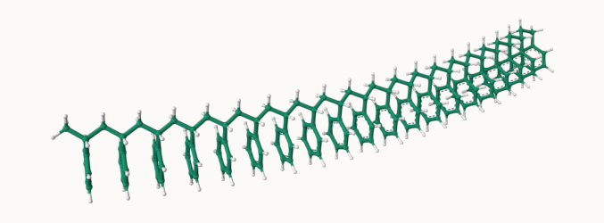

Complex Disordered Systems
Polymers: definitions
What are Polymers?
- Large molecules made of many individual units: monomers
- Degree of polymerization: N > 10^5 units possible
- Macroscopic behavior dominated by large-scale properties
- Statistical mechanics needed even for single chains as they have many components subject to thermal fluctuations
Typical modelling progressing from fine structure details → coarse-grained models
🪁 Play with Polystyrene.
Polymer Architectures
Polymers have many possible architectures:
- Linear: Straight chains (e.g., polyethylene)
- Branched: Main chain + side branches
- Star: Multiple arms from central core
- Cross-linked: Network structures (rubbers, thermosets)
Focus: We will only discuss linear homopolymers for theoretical simplicity.
Freely-Jointed Chain Model
Assumptions:
Monomers at positions \mathbf{R}_{\mathrm{j}} and connected by bonds \mathbf{r}_{j}=\mathbf{R}_{j}-\mathbf{R}_{j-1} of length \left|\mathbf{r}_{j}\right|=b_{0}.
N segments of fixed length b_0
All bond angles equally likely
effectively, it produces a random walk in 3D
The key quantity is th end-to-end vector: \mathbf{R} = \mathbf{r}_1+\mathbf{r}_2+\dots+\mathbf{r}_N = \sum_{j=1}^N \mathbf{r}_j.
Freely-Jointed Chain Model
End-to-end vector statistics
The polymer fluctuates between all possible random-walk-like configurations at fixed inter-monomer distance.
The mean squared end-to-end distance is then simply \begin{aligned}\langle\mathbf{R}^2\rangle &= \left\langle \left( \sum_{i=1}^N \mathbf{r}_i\right) \cdot \left( \sum_{j=1}^N \mathbf{r}_j\right) \right\rangle\\
&= \left\langle \sum_{i=1}^N \sum_{j=1}^N \mathbf{r}_i \mathbf{r}_j \right\rangle\\
\end{aligned} We can split the sum into the terms where i=j and the rest. This yields in general
\langle \mathbf{R}^2\rangle = Nb_0^2+\langle \mathbf{r}_i \mathbf{r}_j \rangle
We assume that successive segments are independent, so
\langle \mathbf{R}^2\rangle = Nb_0^2
Any similarities with previous results? Think about the MSD.
End-to-end vector statistics
We can then use the results of by identifying N (the number of moonomers) with t (the number of steps).
\left\langle\mathbf{R}^2\right\rangle=\left\langle R_x^2\right\rangle+\left\langle R_y^2\right\rangle+\left\langle R_z^2\right\rangle=3 \sigma^2=N b_0^2 \Rightarrow \sigma^2=\frac{N b_0^2}{3}
where \sigma is the variance per component.
For long chains the end-to-end distance is distributed as a 3D Gaussian, centered at zero, with variance proportional to N:
P(\mathbf{R}) = \left( \frac{3}{2\pi N b_0^2} \right)^{3/2} \exp\left( -\frac{3 \mathbf{R}^2}{2 N b_0^2} \right)
Gyration tensor and radius of gyration
The end-to-end vector is most meaningful for linear structures.
Other conformation (compact, branched or star-shaped polymers) are better characterised by a measure of the (average) extent of the polymer chain: theradius of gyration,
The radius of gyration is a generic quantity that can be measured from any point cloud. It is closely linked to the (co)-variance of the set of points.
We start with the standard centre of mass
\mathbf{R}_{\rm CM}=\frac{1}{N} \sum_{j=1}^{N} \mathbf{R}_{j}
In general terms, we cna define a matrix called the gyration tensor (also called the configuration tensor):
\mathbf{S} = \frac{1}{N} \sum_{j=1}^N (\mathbf{R}_j - \mathbf{R}_{\rm CM}) \otimes (\mathbf{R}_j - \mathbf{R}_{\rm CM})
where \otimes denotes the outer product, and \mathbf{S} is a 3 \times 3 symmetric matrix.
Gyration tensor and radius of gyration
The elements of \mathbf{S} are given by
S_{\alpha\beta} = \frac{1}{N} \sum_{j=1}^N (R_{j,\alpha} - R_{{\rm CM},\alpha})(R_{j,\beta} - R_{{\rm CM},\beta})
where \alpha, \beta \in \{x, y, z\}.
The radius of gyration squared is then simply the trace of this tensor (hence, invariant):
R_g^2 = \mathrm{Tr}(\mathbf{S}) = S_{xx} + S_{yy} + S_{zz}
The tensor is symmetric and real \to diagonasable.
Eigenvalues and eigenvectors of \mathbf{S} provide information about the principal axes and shape anisotropy of the polymer coil (do you remember 3D mechanics and Euler angles?).
The tensor of gyration corresponds to the covariance matrix of the positions \mathbf{R}_j.
For the ideal freely-jointed chain, the end-to-end vector and the radius of gyration are linked
\boxed{
\langle R_g^2 \rangle = \frac{1}{6} \langle R^2 \rangle}
Freely-Rotating Chain
A more realistic model takes into account that bond angle are usually restricted.
Take n-butane:
\mathrm{H}_{3} \mathrm{C}-\mathrm{CH}_{2}-\mathrm{CH}_{2}-\mathrm{CH}_{3}
The valence (or bond) angle is the angle between two adjacent chemical bonds. The C-C-C is around 112^\circ.
Freely-Rotating Chain: dihedral angle
Rotations about the C-C bond are possible and are qualified by the dihedral (or torsional) angle
At low temperatures ( k_{B} T < {\mathrm {\text{configurational energy}}}) A (an anti conformation) .
Rising k_{B} T \sim there will also be C (gauche) configurations.
At high temperatures ( k_{B} T \gg config. energy), any angle will be possible.
Freely-Rotating Chain Model
Simple but richer model than the freely jointed model:
- Fixed bond angle \theta
- Torsional angle \varphi can take any value 0 \leq \varphi \leq 2 \pi.
Imagine we have a configuration \{\mathbf{r}_{l}, \mathbf{r}_{2}, \ldots, \mathbf{r}_{j-1}\} and want to add the next segment.
- Average \mathbf{r}_{j} over \varphi, while keeping \mathbf{r}_{1}, \mathbf{r}_{2}, \ldots, \mathbf{r}_{j-1} fixed, only the component in \mathbf{r}_{j} direction remains:
\langle \mathbf{r}_{j} \rangle_{\mathbf{r}, \mathbf{r}_{2}, \ldots, \mathbf{r}_{j-1}\quad {\rm fixed}}=\cos \theta \mathbf{r}_{j-1}
Multiplying both sides by \mathbf{r}_k and averaging over all configurations gives
\left\langle\mathbf{r}_j \cdot \mathbf{r}_k\right\rangle=\cos \theta\left\langle\mathbf{r}_{j-1} \cdot \mathbf{r}_k\right\rangle .
Applying this relation recursively leads to
\left\langle\mathbf{r}_j \cdot \mathbf{r}_k\right\rangle=b_0^2(\cos \theta)^{|j-k|}
Freely-Rotating Chain Model
Given
\left\langle\mathbf{r}_j \cdot \mathbf{r}_k\right\rangle=b_0^2(\cos \theta)^{|j-k|}
for \cos \theta<1, correlations between \mathbf{r}_{j} and \mathbf{r}_{k} decrease with increasing distance |j-k| .
We can link this to the end-to-end distance (proof in the lecture notes) and get the large N limit
\left\langle R^2\right\rangle \approx N b_0^2+\frac{2 b_0^2}{1-\cos \theta} N \cos \theta=N b_0^2\left(\frac{1+\cos \theta}{1-\cos \theta}\right)=C N b_0^2
with C=(1+\cos \theta) /(1-\cos \theta) .
Freely-Rotating Chain Model: Effect of Bond Angle
\theta \to 0: C \gg 1 → Rigid rod \langle R^2 \rangle \gg N b_0^2
Nearly straight chain. The end-to-end distance is much larger than that of a flexible chain with the same number of segments.
\theta \to \pi: C \ll 1 → Collapsed globule
\langle R^2 \rangle \ll N b_0^2
Compact, globular, collapsed assembly. Examples: polypeptides, polystyrene in water, chromatin
\theta = 90°: C = 1 → Ideal random walk \langle R^2 \rangle = N b_0^2
Corresponds to our original freely jointed chain (random walk).
🪁 Play with models